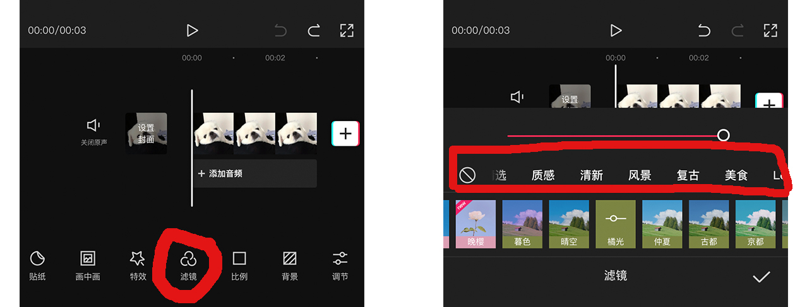
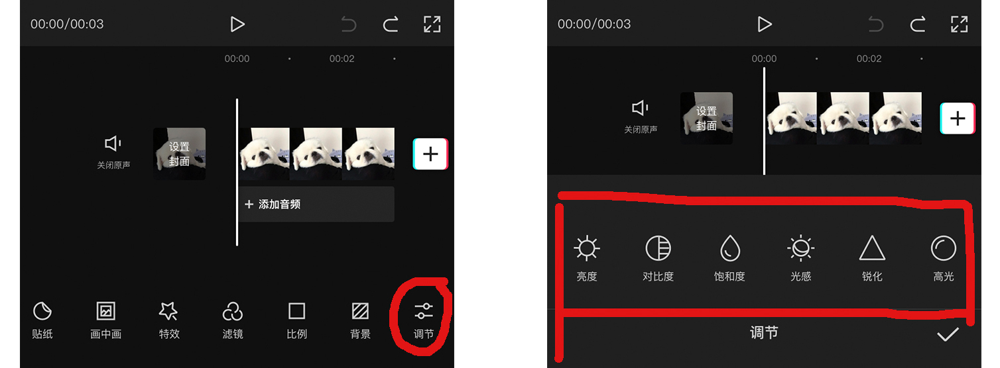
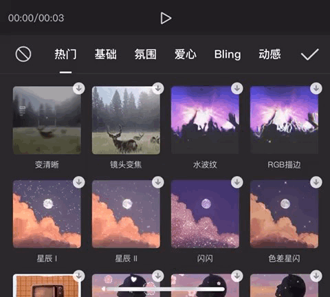
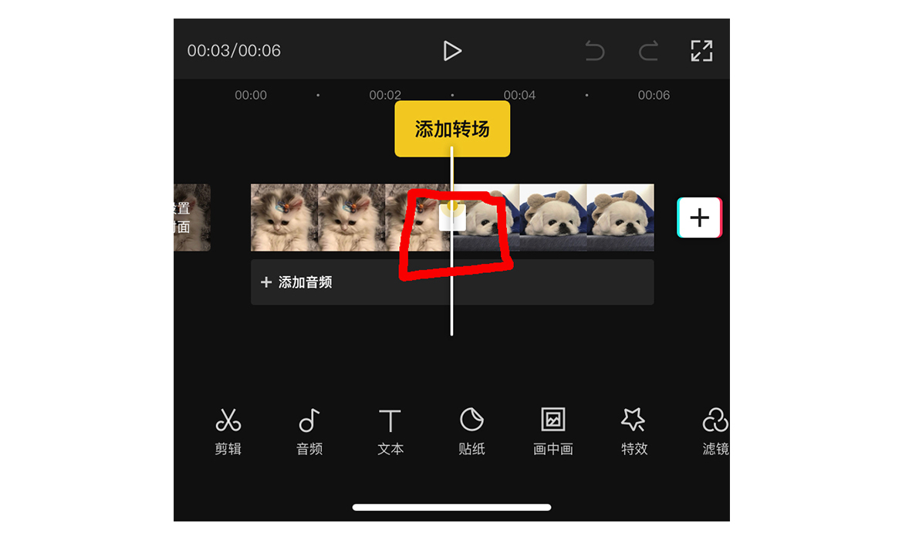
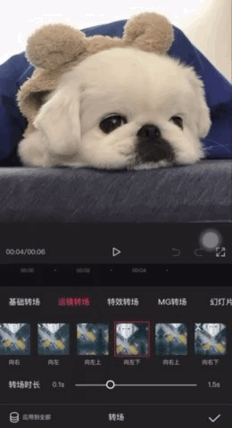
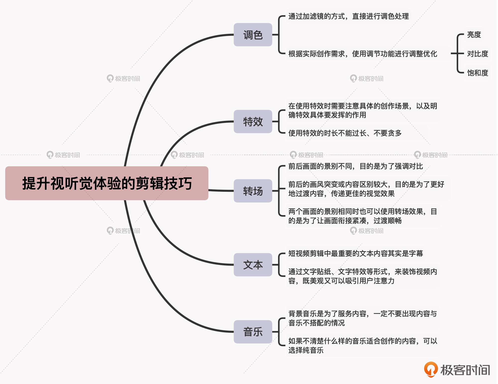

- 00 开篇词 短视频时代下，怎么把握好变现风口？.md.html
- 01 爆款短视频的底层逻辑：用心拍的短视频为啥没人看？.md.html
- 02 爆款短视频的底层逻辑：如何轻松打造自我特色？.md.html
- 03 精益创业法：如何快速跨过从0到1这道坎？.md.html
- 04 SWOT法：这么明显的个人优势你为啥就是看不到？.md.html
- 05 效用函数法：如何用量化的方式进行高效创作？.md.html
- 06 二次创新实验法：如何打造个人的差异化定位？.md.html
- 07 平台定位：如何选择最适合自己的创作平台？.md.html
- 08 如何快速找到各大短视频平台的正确切入点？.md.html
- 09 选题（上）：如何利用思考清单找到合适选题？.md.html
- 10 选题（下）：如何为不同的内容定制合适选题？.md.html
- 11 优劣分析法：如何快速筛选适合创作的视频素材？.md.html
- 12 标题（上）：如何利用微创新巧妙找到爆款标题？.md.html
- 13 标题（下）：如何用对号入座的方式抓住标题亮点？.md.html
- 14 视频封面（上）：如何快速抓住用户注意力？.md.html
- 15 视频封面（下）：如何传递最有价值的信息？.md.html
- 16 视频剪辑：如何轻松掌握视频化剪辑的三大公式？.md.html
- 17 效果反馈法：剪辑很容易，为什么你却一直学不会？.md.html
- 18 剪辑对比（上）：如何避开常见的短视频剪辑陷阱？.md.html
- 19 剪辑对比（下）：如何利用剪辑技巧提升视频质量？.md.html
- 20 拉片法：用电影创作的方式学习爆款短视频运营技巧.md.html
- 21 用户留存率：为什么粉丝很多但忠实拥趸却很少？.md.html
- 22 点赞率（上）：如何有效提升短视频的点赞量？.md.html
- 23 点赞率（下）：三种方法轻松提升用户对内容的认可度.md.html
- 24 上瘾机制：为什么视频观看量很高却没人留言？.md.html
- 25 避坑指南：为什么很多短视频账号中途做不下去了？.md.html
- 26 如何找到适合自己的短视频变现模式？.md.html
- 27 多元化变现：如何明确不同创作阶段的变现任务？.md.html
- 28 多内容变现：不同内容的主打变现模式是什么？.md.html
- 结束语 一切成大事者，都是终身学习者.md.html
- 捐赠
19 剪辑对比（下）：如何利用剪辑技巧提升视频质量？
你好，我是周维。
在第16讲中，我提到过剪辑的好坏直接决定了视频内容的质量，而视频质量的高低是影响内容成为爆款的重要因素之一。那么这里你可能会存在一些疑问：衡量视频质量高低的标准是什么，以及我要如何通过剪辑来提升视频质量呢？
在解答这个问题之前，我想先通过一个例子，让你来挑选一下你认为视频质量高的内容。假设甲和乙两个人都是拍摄旅行类内容的短视频创作者，现在他们根据相同的内容主题创作了一期视频：
- 甲创作者拍摄的画面优美，镜头语言专业，而且画面的衔接也很顺畅，搭配的背景音乐与内容恰如其分；
- 乙创作者拍摄的画面非常晃动，镜头切换也是随心所欲，而且没有搭配背景音乐。
现在问你，你会喜欢看哪一类内容？我想答案肯定是甲拍摄的短视频内容，因为从文字描述上，我们就能发现他的短视频明显会带给用户绝佳的视听觉体验，质量一定会好于后者。
所以，衡量视频质量高低的关键因素，就是作品是否带给用户好的视听觉体验。这里的视听觉体验涵盖了很多方面，比如画面明暗适中、清晰流畅，镜头切换不突兀，背景音乐恰当，等等。
那么，要为用户呈现出这样的效果，我们其实可以从图像处理的角度着手，即亮度、对比度、饱和度等，然后利用相应的剪辑技巧进行调整，从而达到视频画面和背景音乐协调统一的目的。所以接下来，我就给你分享一下可以提升视听觉体验的各种剪辑技巧，分别是调色、特效、转场、文本、音乐。
另外我还要说明一点，现在大部分人基本上都是通过手机拍摄视频素材，然后直接导入到手机上的剪辑App里进行筛选和剪辑。所以在这节课当中，我会以抖音官方推出的剪辑App“剪映”为例（原因是使用人群广且其功能较为智能化，可以节省大量的学习成本），给你介绍相应的剪辑技巧。
调色
首先我们来说一下调色。这里我们要先搞明白，为什么有些视频素材需要调色？
实际上，调色调的就是前面我提到的画面亮度、饱和度、对比度等。调色是一种渲染技巧，通过对视频颜色的调整，视频内容的意境、氛围也就随之产生了，而这种意境和氛围就会带给用户不一样的视觉体验。我这里放了两个视频作为对比，你可以看看调色前后的区别：
那么具体要如何调色呢？主要有两种方式，下面我就以剪映为例给你做个介绍。
1. 通过加滤镜的方式，直接对创作的内容进行调色处理。
我们可以看到剪映的滤镜效果有很多，而且根据不同的拍摄内容，这里的滤镜也做了分类，比如有风景类型、复古类型、美食类型、油画类型、电影类型，等等，你可以根据自己的内容进行有针对性的选择。

如果你是一个没有任何美术基础的创作者，使用滤镜的方法就足够了。而如果你有一定的美术基础，那么你就可以使用App上的颜色调节功能，根据实际的创作需求来做相应的调整优化。
2. 根据实际创作需求，使用颜色调节功能进行调整优化。
点击剪映中的“调节”选项，我们可以看到有亮度、对比度、饱和度、光感、锐化、高光、阴影等12种颜色调节功能。

在短视频创作中，通常使用最多的是亮度、对比度和饱和度三种调节功能，这也是处理摄影图像时经常会使用到的参数（即HSL，Hue, Saturation, Lightness的简称）。下面我就来一一给你说明下应用场景：
- 亮度，即画面的明亮程度。有时由于拍摄场景的光线问题，会导致画面中的景色或人物很暗、很黑，针对这种情况你就可以通过亮度功能来进行调节。
- 对比度，即画面中的明暗对比。通过调节对比度，视频画面中最暗的和最亮的会形成更加鲜明的对比，从而让作品变得更加有质感。不过我这里要提醒你的是，不要将对比度的参数调整到最大，否则就会曝光过度，影响画面美感；也不要最低，不然没有效果，调到中间的数值就可以了。
- 饱和度，即画面的色彩鲜艳程度。比如，你拍摄了一段风景，可以简单调整饱和度，来让绿色更绿、红花更红，这样在视频的观感上就会有层次感，用户的体验也会更好。
特效
好，我们接着来说一下特效。特效也被称为影视特效，即通过人工的方式制作出来的假象和幻觉，它主要是用来强调一种视觉效果，从而让剧情更加扣人心弦。
当然，我们在创作短视频的时候并不需要做出像科幻大片那样的特效，因为条件不允许也没有必要。在短视频剪辑中，我们适当使用一些特效的目的，主要是可以增加作品的流畅度及质感。
下面我们来看一下剪映上的特效功能。点开“特效”选项，我们可以看到有热门、基础、氛围、爱心、动感等各种特效，每一种特效下面也做了具体分类，我们可以根据内容调性选择合适的特效效果。

比如，你可以来看看下面这两个视频，一个是用了雪花细闪、全剧终特效来展示拍摄的雪花视频内容，而另一个没有使用任何特效。通过对比，你能很明显地看出来，使用特效的视频画面会更加唯美与浪漫。
到这里你肯定要问了，这么多特效效果，我在使用的时候应该注意什么呢？我给你总结了三点，你可以参考一下：
- 在剪辑水平不是很熟练的情况下，我建议你可以多采用“热门”中的特效。这里的特效往往是受用户欢迎或者是一段时间内平台重推的特效功能，使用这些特效也完全可以满足作品剪辑的需求。
- 不管在哪个内容领域，使用特效的时长不能过长，一般选择默认的播放时长插入就可以了。因为特效最主要的作用是为了突出某种效果或是渲染某种氛围，长时间呈现会导致视频带来的整体视听觉效果大打折扣。
- 特效功能切记不要贪多。特效主要是起到强调内容的作用，一个短视频中最多不要频繁出现3次，否则会造成用户的审美疲劳。
总之，在使用特效时需要注意具体的创作场景，以及明确特效具体要发挥的作用，这样你对于如何使用特效就驾轻就熟了。
转场
转场就是一帧画面转换成另一帧画面之间的转换效果，它主要是起到衔接前后画面的协调作用。好的转场可以让视频效果更加“炫酷”，也能够通过平衡画风突变的内容，让观者的体验更加舒适。
我还是拿剪映中的转场效果来给你介绍一下。当你上传了两段及以上的视频素材时，在两个素材的中间会出现一个白色的方块，点击一下，就会进入到转场效果的设置中。

剪映上的转场效果主要有基础转场、运镜转场、特效转场、MG转场、幻灯片、遮罩转场六种，每种效果下也做了各种分类，如下图所示。

那么问题来了，什么样的情况下可以使用转场呢？我给你总结了一下：
- 前后画面的景别不同
比如说，第一个画面是全景，第二个则是特写/中景/远景等，在这样的情况下就可以插入转场效果，目的是为了强调对比。
我举个例子，第一个镜头是以远景拍摄的是一片花海，而接着是一朵花的特写镜头，那么这时就可以在两个镜头之间使用转场的效果，会让画面的对比更突出、更有层次感。
- 前后的画风突变或内容区别较大
比如说第一个镜头拍摄的是图书，下一个画面又变成了大树，在这个时候可以使用转场，目的是为了更好地过渡内容，传递更佳的视觉效果。
- 两个画面的景别相同时，也可以使用转场效果
比如你的第一个画面是全景，而第二个画面也是以全景拍摄的时候，其实同样可以使用转场，这里使用的目的是为了让画面衔接紧凑，过渡顺畅。
文本
说完转场，我们再来说一下文本。
文本，就是以文字的形式在视频中做一些解释、说明或者是起强调画面的作用。我们可以在视频上通过文字贴纸、文字特效等形式，来装饰自己的视频内容。比如，下面的图例中就是采用文字贴纸的方式做标题，既美观又可以吸引用户注意力。
不过在我看来，短视频剪辑中最重要的文本内容其实是字幕，也就是以文字形式来展现视频中的非影像内容，目的是让用户更好地了解视频中要传递的信息。
现在使用字幕文本比较容易，只需要点击剪映上的“文本”就能看到“识别字幕”，然后就可以快速将内容中所有的声音信息转换成字幕了。这里我给你分享三点使用字幕的小技巧：
- 你在给自己的视频内容添加字幕时，如果原来的视频素材中已经有一些字幕，记得点击“同时清空已有字幕”，不然会出现多重字幕的情况，影响用户的观看。
- 在识别字幕之后，往往产生的字幕文字偏小，这样会影响用户的观看，所以你一定要记得将整体的文字效果拉大一些，让视频的两端留出的空隙小于文字整体的长度。
- 虽然一键生成字幕确实很方便，但是也会有一定的出错率。所以记得要像检查作业一样查看一下最后的字幕内容。
音乐
前面我们探讨的主要都是视觉方面的剪辑效果，最后我们再来看看听觉方面的良好体验要如何达成。
短视频中的音乐指的就是背景音乐（BGM）。音乐的正确使用，可以为用户营造一种精神上共鸣氛围，从而让用户快速产生代入感。这里我给你放了一个案例，你可以观摩一下。这个是风景类的视频内容，因为有相得益彰的背景音乐衬托，就使得画面凸显的震撼感直抵观看者内心。
一个短视频能够成为爆款离不开合适的背景音乐的衬托，对于背景音乐的选取，这里我给你分享两点。
第一，背景音乐是为了服务内容，因此一定不要出现内容与音乐不搭配的情况。比如，你记录了自己每天辛苦加班的经历，你想对外传递的是自己内心的郁闷，那么就不能搭配欢快的背景音乐。
第二，剪映上的“音乐”选项中涵盖了很多的音乐类型，如卡点音乐、旅行音乐、美食音乐、美妆音乐、运动音乐等。如果没有你喜欢的音乐，可以通过导入第三方平台上的音乐链接来找到喜欢的音乐。
另外，如果你面对这么多选择，还是不太清楚什么样的音乐适合自己的内容，那你可以在纯音乐中选择一首，一般来说用户的观看体验都不错。因为纯音乐没有特定歌词的指向性，比较百搭。
还有，如果你想选择抖音平台上流行的歌曲，就可以优先选择剪映上的“推荐音乐”，这些都是最近一段时间里平台上最热、用户最喜欢的音乐。使用这些热门的背景音乐，可以让后台的机器自动将内容归结到同一类音乐的区域内，让喜欢同类音乐的用户观看到，可以增加更多的曝光量。
小结
今天，我给你分享了五种可以提升视听觉体验的剪辑技巧，分别是调色、特效、转场、文本、音乐，你需要注意以下两点：
- 不管使用哪种剪辑技巧，前提是一定要与自己的内容相匹配。不要忘了，剪辑是服务于创作内容的，它是内容视听觉化的表现。
- 当你通过这些步骤完成一条视频之后，在生成成片之前，记得先去“设置”里将平台自带的Logo、水印去掉，上节课我也提到过这一点，你在剪辑时一定要注意这样的细节问题。
最后我想说，对于短视频剪辑，想要真正掌握必须要亲自多次实践，你可以围绕自己的内容主题多尝试一些不同的剪辑效果，只有这样才能熟能生巧，提升自身的剪辑水平，也才会让自己的创作内容在视听觉方面更胜一筹。

思考题
现在很多人都会认为，创作Vlog类型的短视频为了体现真实感，不应该加入任何剪辑技巧，你是怎么看待这件事的？欢迎给我留言。
如果你觉得有收获，也欢迎把今天的内容分享给更多的朋友。感谢你的阅读，我们下一讲再见。
© 2019 - 2023 Liangliang Lee. Powered by gin and hexo-theme-book.